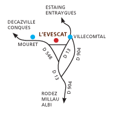

Les Jardins
de Terre Rouge
Bienvenue sur notre site
Temps d'accueil
Pour venir a l'Evescat
A partir d'avril. jusqu'aux vacances de la Toussaint. Fermé en aout.
Accueil des familles avec enfants pour activités et pour anniversaires : les 3èmes mercredis du mois, les samedis après- midis. Les vacances sur inscription.
Accueil des classes : les jours de semaine
Les centres de loisirs : les mercredis et les vacances sur inscription

L'association Terre Rouge propose aussi des interventions et la conception de projets de jardins ou terrains d'aventures dans les écoles, les centres de loisirs et autres établissements.
Pour que la Terre puisse respirer.
Notre avenir et celui de la Terre passent par le respect et la connaissance de la nature et des êtres vivants qui la peuplent.
Terre Rouge, c'est la joie de mettre les mains à la terre et s'approcher du monde naturel par les sens, l'art, la technique et la science.
Les jardins de Terre Rouge
Association 1901 d'éducation à l'environnement
lieu-dit l'Evescat
12330 MOURET
Anne DELIENNE
05 65 69 59 50
07 87 72 42 89
jardins-terrerouge@orange.fr
www.jardins-terrerouge.fr